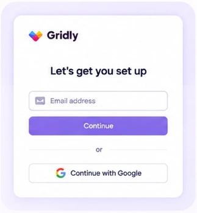
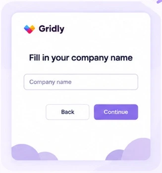
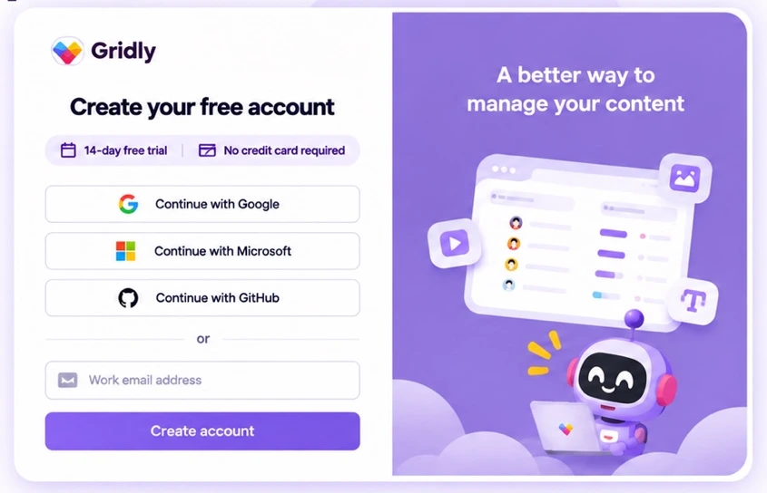
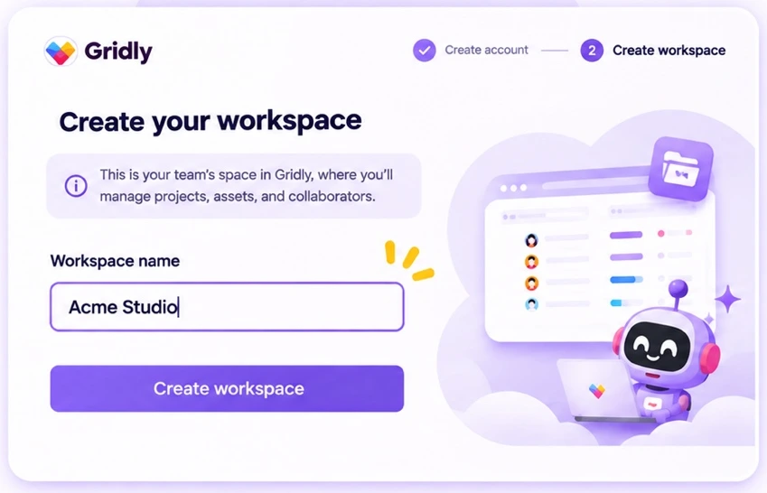
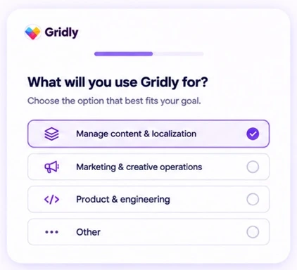
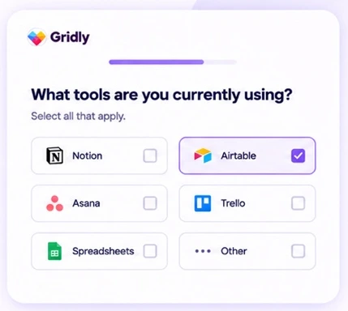
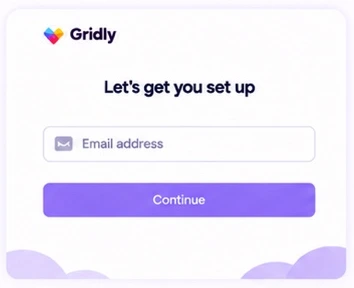
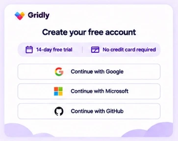
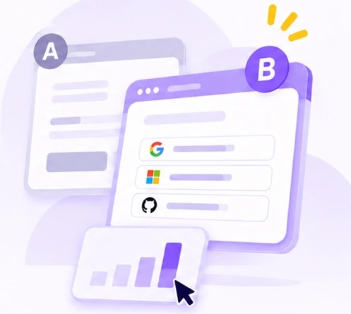

~3,000
Monthly visitors to the sign-up page
Reducing friction before users reach a workspace.
Phu Vo HoangProduct Design Lead2023

I focused on getting more of that existing traffic through registration.
Monthly visitors to the sign-up page
Baseline sign-up conversion
Google was the only single sign-on option.
The page gave little detail about the trial.

The form asked for a company name without explaining how it related to the workspace.

Marketing needed context to personalize follow-up. Users needed a quick path into Gridly.
Keep the essentials. Collect what users need to create an account and name a workspace.
Ask for more context. Group questions about role, use case and current tools into shorter steps.
I added Microsoft and GitHub alongside Google and kept email sign-up available.
I made the 14-day trial and no-card requirement visible before users entered an email.

I prefilled the company name using the name the user had already entered.
I explained that the workspace is where users manage their projects.

Understand what the user wants to achieve with Gridly.

Learn about the tools the user is already using.

After submission, a loading state tells users that Gridly is preparing sample data.
The PM wanted to know whether the new flow could introduce fresh friction.
Original sign-up flow

Redesigned sign-up flow


Traffic split
Overall sign-up conversion, drop-off by step and time to complete registration.
Four-week A/B test with a 50/50 traffic split.
72% → 81%
▲ +9 percentage points2m 20s → 1m 50s
▼ 30 seconds fasterEach group had 1,500 users. In Control A, 1,080 signed up (72%). In Variant B, 1,215 signed up (81%). The estimated lift was +9.0 percentage points, with an approximate 95% confidence interval of +6.0 to +12.0 percentage points.
The test gave the PM a reason to back rollout. More visitors completed sign-up, and average registration time fell.
Roll out the redesigned sign-up flow to all users.
Share of new accounts that open or create a first project within 7 days.
Share of users shown the onboarding questions who submit answers.